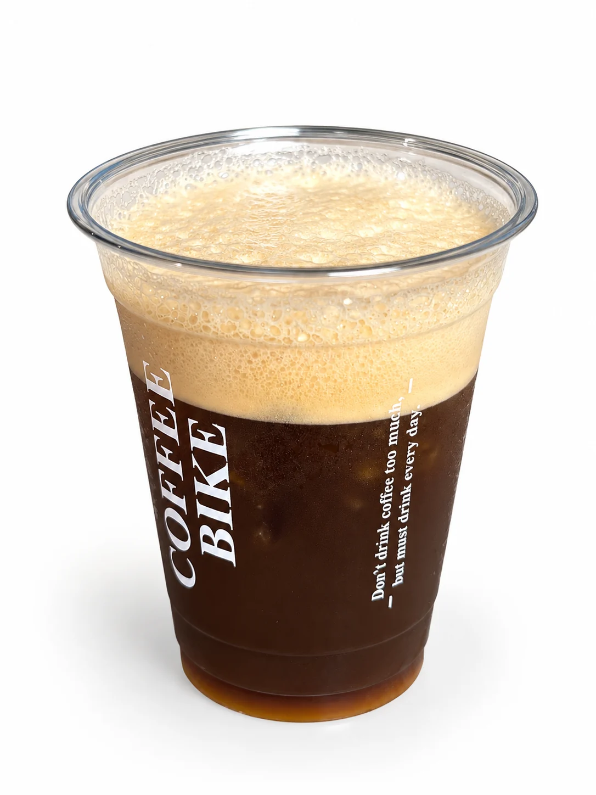

01Seri
↗
Diseduh untuk jeda
Seri
kopi.
- Americano Original
- Coconut Americano
- Rum Americano
- Helena Jasmine & Blueberry Coffee
- Americano Soda Americano dengan sentuhan soda
Ruang teduh di sudut Petamburan untuk menikmati seduhan kopi pilihan, kehangatan rasa masakan Little Jogja, dan jeda yang menenangkan di tengah ritme Jakarta.

Coffee Bike · Jakarta Barat · sejak 2021
Sejak 2021, Coffee Bike menjadi tempat nongkrong yang nyaman untuk menikmati kopi, makan, bekerja, dan berkegiatan bersama. Little Jogja memadukan hidangan tradisional Indonesia dengan suasana coffee shop yang santai.
ruangmu, ritmemu ♡Hidangan khas, suasana santai
Little Jogja memadukan hidangan tradisional Indonesia dengan suasana kedai kopi yang santai.
Jelajahi menu makananRuang untuk bekerja dan berkumpul
Ruang yang mendukung waktu santai, fokus bekerja, presentasi, dan kegiatan bersama.
Area nyaman untuk bekerja, belajar, atau menyelesaikan tugas.
↗Ruang multifungsi untuk kegiatan kelompok atau pertemuan hingga 30 orang.
↗Ruang privat untuk kebutuhan khusus.
↗Perangkat untuk presentasi dan berbagai kegiatan.
↗Hiburan musik untuk menemani suasana kedai.
↗Koneksi internet untuk bekerja, belajar, dan aktivitas digital.
↗Mampir, duduk lebih lama
Terhubung Bersama Kami · Petamburan
Ruang teduh di sudut Petamburan untuk menikmati seduhan kopi pilihan, hidangan Little Jogja, berkegiatan, atau beristirahat sejenak. Pintu kami selalu terbuka hangat untuk Anda.